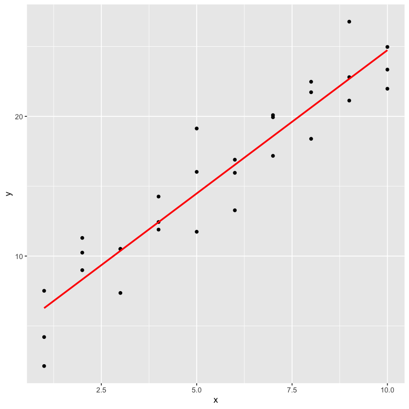
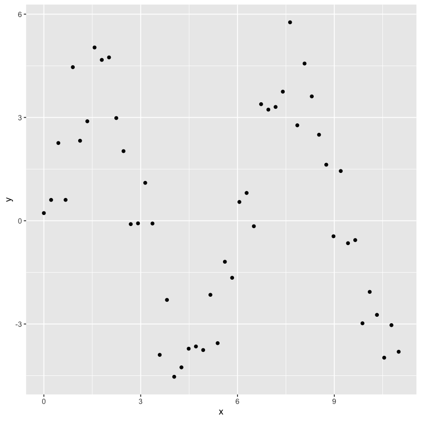

library('tidyverse')
library('modelr')모델링 a
회귀분석(회귀선, 예측값, 잔차, 변수간의 상호관계), 변환, 결측값, 다른 모델
회귀분석
회귀선
- 회귀분석을 원초적으로부터 시작해보기
일단 찍는다.
ggplot(sim1, aes(x, y)) +
geom_point()- 250개의 점을 찍고 그 점들 각각을 \(B_0\) 와 \(B_1\)으로 사용해서 선을 그은 모습
models <- tibble(
a1 = runif(250, -20, 40),
a2 = runif(250, -5, 5)
)ggplot(sim1, aes(x, y)) +
geom_abline(
aes(intercept = a1, slope = a2),
data = models, alpha = 1/4
) +
geom_point()- 점들에 회귀선 추가해서 그리기
ggplot(sim1, aes(x, y)) +
geom_point() +
geom_abline(intercept = 7, slope = 1.5, color = "BLUE")- 선을 250개 긋는 것은 정확한 방법이 아닌 것 같으므로 거리 기반으로 선을 긋기 위해 높이 파악(y값)
기준은 위의 파란선으로부터
model1 <- function(a, data){
a[1] + data$x * a[2]
}
model1(c(7, 1.5), sim1)- 8.5
- 8.5
- 8.5
- 10
- 10
- 10
- 11.5
- 11.5
- 11.5
- 13
- 13
- 13
- 14.5
- 14.5
- 14.5
- 16
- 16
- 16
- 17.5
- 17.5
- 17.5
- 19
- 19
- 19
- 20.5
- 20.5
- 20.5
- 22
- 22
- 22
- 평균 제곱근으로 거리 구하기(음의 거리 절댓값 씌워주기 위해)
일단 한 개
measure_distance <- function(mod, data){
diff <- data$y - model1(mod, data)
sqrt(mean(diff^2))
}
measure_distance(c(7, 1.5), sim1)
2.66521206887029
- 이 방법을 위의 250개의 데이터 셋에 적용
sim1_dist <- function(a1, a2){
measure_distance(c(a1, a2), sim1)
}
models <- models %>%
mutate(dist = purrr::map2_dbl(a1, a2, sim1_dist))
models %>% head| a1 | a2 | dist |
|---|---|---|
| <dbl> | <dbl> | <dbl> |
| -8.247004 | 0.697756642 | 20.40099 |
| -9.448927 | 2.427623209 | 11.84420 |
| 19.508571 | -4.119477393 | 25.81913 |
| -3.733276 | 4.821871493 | 10.99476 |
| -1.019675 | -0.000299504 | 17.67361 |
| -2.200861 | 4.995275936 | 13.09397 |
- 이 방법으로 구한 회귀선을 점과 함께 그어보기
가장 좋은 10개의 점의 선만 보이게 함
ggplot(sim1, aes(x, y)) +
geom_point(size = 2, color = "grey30") +
geom_abline(
aes(intercept = a1, slope = a2, color = -dist),
data = filter(models, rank(dist) <= 10)
)- 가장 좋은 10개의 점은 빨간 색으로 강조 표시
나머지 250개 점도 이번에는 표기
ggplot(models, aes(a1, a2)) +
geom_point(
data = filter(models, rank(dist) <= 10),
size = 4, color = "red"
) +
geom_point(aes(color = -dist))- 골고루 뿌려진(실제 모습) 형태가 아닌 같은 간격의 균등한 격자무늬에 어느 포지션에 위치하나를 보고 싶다면 사용할 수 있는 방법
이 방법을 grid search라 한다.
grid <- expand.grid(
a1 = seq(-5, 20, length = 25),
a2 = seq(1, 3, length = 25)
) %>%
mutate(dist = purrr::map2_dbl(a1, a2, sim1_dist))grid %>%
ggplot(aes(a1, a2)) +
geom_point(
data = filter(grid, rank(dist) <= 10),
size = 4, color = "red"
) +
geom_point(aes(color = -dist))ggplot(sim1, aes(x, y)) +
geom_point(size = 2, color = "grey30") +
geom_abline(
aes(intercept = a1, slope = a2, color = -dist),
data = filter(grid, rank(dist) <= 10)
)최적의 모델을 선택할 때까지 그리드를 반복적으로 더욱 세밀하게 만드는 작업을 생각해볼 수 있다.
하지만 이 문제를 해결할 수 있는 더 좋은 방법인 뉴턴 랩슨 기법(Newton-Raphson search)이라 불리는 수치 최소화 도구가 있다.
뉴튼 랩슨 기법의 직관은 매우 간단하다. 시작점을 선택하고 가장 가파른 기울기를 찾기 위해 탐색한다. 그런 다음 가장 작은 값으로 갈 수 없을 때까지 기울기를 약간씩 기울이는 작업을 반복한다. R에서는 optim()을 사용하여 이 작업을 수행할 수 있다.
best <- optim(c(0, 0), measure_distance, data = sim1)
best$par- 4.22224779961462
- 2.05120381317836
optim 기법을 이용해 얻은 회귀선
ggplot(sim1, aes(x, y)) +
geom_point(size = 2, color = "grey30") +
geom_abline(intercept = best$par[1], slope = best$par[2])사실 이 방법이 lm에서 회귀선을 구해주는 방식이다.
sim1_mod <- lm(y ~ x, data = sim1)
coef(sim1_mod)- (Intercept)
- 4.22082190478565
- x
- 2.05153307981692
예측값
- 예측값 만들어 실제와 비교해보기 위해 예측값을 생성하기
data_grid : 해당 항목의 값만 뽑아서 보기(중복 제외)
grid <- sim1 %>%
data_grid(x)
grid| x |
|---|
| <int> |
| 1 |
| 2 |
| 3 |
| 4 |
| 5 |
| 6 |
| 7 |
| 8 |
| 9 |
| 10 |
grid <- grid %>%
add_predictions(sim1_mod)
grid| x | pred |
|---|---|
| <int> | <dbl> |
| 1 | 6.272355 |
| 2 | 8.323888 |
| 3 | 10.375421 |
| 4 | 12.426954 |
| 5 | 14.478487 |
| 6 | 16.530020 |
| 7 | 18.581553 |
| 8 | 20.633087 |
| 9 | 22.684620 |
| 10 | 24.736153 |
ggplot(sim1, aes(x)) +
geom_point(aes(y = y)) +
geom_line(
aes(y = pred),
data = grid,
color = "red",
size = 1
)
잔차
sim1 <- sim1 %>%
add_residuals(sim1_mod)sim1 %>% head| x | y | resid |
|---|---|---|
| <int> | <dbl> | <dbl> |
| 1 | 4.199913 | -2.0724420 |
| 1 | 7.510634 | 1.2382791 |
| 1 | 2.125473 | -4.1468822 |
| 2 | 8.988857 | 0.6649694 |
| 2 | 10.243105 | 1.9192174 |
| 2 | 11.296823 | 2.9729351 |
geom_freqpoly : ggplot의 히스토그램 함수
- 잔차의 빈도
ggplot(sim1, aes(resid)) +
geom_freqpoly(binwidth = 0.5)geom_ref_line : ggplot에 참조선 추가해준다.
> geom_ref_line(h, v, 크기 = 2, 색상 = “흰색”)
- 잔차의 분포
랜덤하게 분포된 것을 보니 모델이 데이터셋에서 패턴을 잘 포착하였음을 의미한다.
ggplot(sim1, aes(x, resid)) +
geom_ref_line(h = 0) +
geom_point()model_matrix : 회귀모델을 matrix로 보여준다.
df <- tribble(
~y, ~x1, ~x2,
4,2,5,
5,1,6
)
model_matrix(df, y ~ x1)| (Intercept) | x1 |
|---|---|
| <dbl> | <dbl> |
| 1 | 2 |
| 1 | 1 |
- 열 하나 줄이기
model_matrix(df, y ~ x1 - 1)| x1 |
|---|
| <dbl> |
| 2 |
| 1 |
- x2변수까지 추가
model_matrix(df, y ~ x1 + x2)| (Intercept) | x1 | x2 |
|---|---|---|
| <dbl> | <dbl> | <dbl> |
| 1 | 2 | 5 |
| 1 | 1 | 6 |
-범주형 변수에서의 model_matrix
df <- tribble(
~ sex, ~ response,
"male", 1,
"female", 2,
"male", 1
)
df| sex | response |
|---|---|
| <chr> | <dbl> |
| male | 1 |
| female | 2 |
| male | 1 |
model_matrix(df, response ~ sex)| (Intercept) | sexmale |
|---|---|
| <dbl> | <dbl> |
| 1 | 1 |
| 1 | 0 |
| 1 | 1 |
ggplot(sim2) +
geom_point(aes(x, y))add_predictions : 해당 모델로 추정된 예측값 추가
mod2 <- lm(y ~ x, data = sim2)
grid <- sim2 %>%
data_grid(x) %>%
add_predictions(mod2)
grid| x | pred |
|---|---|
| <chr> | <dbl> |
| a | 1.152166 |
| b | 8.116039 |
| c | 6.127191 |
| d | 1.910981 |
사실상 범주형 변수 x를 포함한 모델은 각 범주의 평균값을 예측한다.(그 이유는 각 범주의 평균값이 평균제곱근 편차를 최소화 하기 때문이다.)
이는 원 데이터 위에 예측값을 겹쳐서 그려보면 쉽게 확인할 수 있다.
- “sim2” 데이터 셋에 예측값은 빨간 색으로 찍어 보았다.
평균 정도 위치에 있음을 볼 수 있다.
ggplot(sim2, aes(x)) +
geom_point(aes(y = y)) +
geom_point(
data = grid,
aes(y = pred),
color = "red",
size = 4
)ggplot(sim3, aes(x1, y)) +
geom_point(aes(color = x2))변수간의 상호작용 관계
+를 사용하여 변수를 추가하면 모델은 다른 모든 변수와 독립적인 각 효과를 추정한다.
*을 사용하면 상호작용이라 불리는 항을 적합할 수 있다. 예를 들어
\(y\) ~ \(x1 * x2\)는
$ y = a_0 + a_1 * a1 + a_2 * a2 + a_{12} * a1 * a2$로 변환된다.
- 이를 위해 두 가지 모델 사용
각각은 변수를 +, * 관계로 적용
mod1 <- lm(y ~ x1 + x2, data = sim3)
mod2 <- lm(y ~ x1 * x2, data = sim3)grid <- sim3 %>%
data_grid(x1, x2) %>%
gather_predictions(mod1, mod2)
grid %>% head| model | x1 | x2 | pred |
|---|---|---|---|
| <chr> | <int> | <fct> | <dbl> |
| mod1 | 1 | a | 1.674928 |
| mod1 | 1 | b | 4.562739 |
| mod1 | 1 | c | 6.480664 |
| mod1 | 1 | d | 4.034515 |
| mod1 | 2 | a | 1.478190 |
| mod1 | 2 | b | 4.366001 |
facet_wrap : 그룹별(범주)로 plot을 분할하여 보여준다.
ggplot(sim3, aes(x1, y, color = x2)) +
geom_point() +
geom_line(data = grid, aes(y = pred)) +
facet_wrap(~ model)+를 사용한 모델은 각 라인의 기울기는 같지만 y 절편값은 서로 다르다.
*를 사용한 모델은 기울기와 y 절편값이 모두 다르다.
어떤 모델이 이 데이터에 잘 맞을까? 이는 잔차를 통해 확인할 수 있다. 여기서는 각 그룹 내의 패턴을 쉽게 확인하기 위해 모델과 x2로 면분할하였다.
sim3 <- sim3 %>%
gather_residuals(mod1, mod2)
ggplot(sim3, aes(x1, resid, color = x2)) +
geom_point() +
facet_grid(model ~ x2)mod의 잔차에서는 확실한 패턴이 거의 보이지 않는다. mod1의 잔차는 분명하게 모델이 b에서 어떤 패턴을 놓쳤다는 것을 나타내주며 b보다는 덜하지만 c와 d에서도 여전히 패턴이 존재하는 것을 알 수 있다.
연속형 변수의 상호작용
- 두개의 연속 변수로 이루어진 같은 모델로 시작한다.
mod1 <- lm(y ~ x1 + x2, data = sim4)
mod2 <- lm(y ~ x1 * x2, data = sim4)grid <- sim4 %>%
data_grid(
x1 = seq_range(x1, 5),
x2 = seq_range(x2, 5)
) %>%
gather_predictions(mod1, mod2)
grid %>% head| model | x1 | x2 | pred |
|---|---|---|---|
| <chr> | <dbl> | <dbl> | <dbl> |
| mod1 | -1.0 | -1.0 | 0.9963094 |
| mod1 | -1.0 | -0.5 | -0.3949484 |
| mod1 | -1.0 | 0.0 | -1.7862061 |
| mod1 | -1.0 | 0.5 | -3.1774639 |
| mod1 | -1.0 | 1.0 | -4.5687216 |
| mod1 | -0.5 | -1.0 | 1.9071424 |
seq_range : 최소값과 최대값 사이를 균일하게 간격을 나눈다.
- 예시
seq_range(c(1,2),5)- 1
- 1.25
- 1.5
- 1.75
- 2
- seq_range 옵션
n은 안써도 됨, pretty = TRUE는 사람이 보기 좋게 만들어 줌(소수점 잘라서)
seq_range(c(0.0123, 0.923423), n = 5)- 0.0123
- 0.24008075
- 0.4678615
- 0.69564225
- 0.923423
seq_range(c(0.0123, 0.923423), n = 5, pretty = TRUE)- 0
- 0.2
- 0.4
- 0.6
- 0.8
- 1
rcauchy : 코시분포 난수 생성
코시분포 : 모평균이 존재하지 않는 분포
x1 <- rcauchy(100)
seq_range(x1, n = 5)- -30.6598727690423
- -20.2891777908305
- -9.91848281261869
- 0.452212165593139
- 10.822907143805
trim = 0.10 : 꼬리 값 10% 제거
변수가 꼬리가 긴 분포를 갖고 있고 중심 근처의 값을 생성하고자 할 때 사용
seq_range(x1, n = 5, trim = 0.10)- -8.38143125026766
- -5.30064261199304
- -2.21985397371841
- 0.860934664556208
- 3.94172330283083
expnad = 0.1 : trim()과 반대 기능, 범위를 10% 확장
x2 <- c(0, 1)
seq_range(x2, n = 5)- 0
- 0.25
- 0.5
- 0.75
- 1
seq_range(x2, n = 5, expand = 0.10)- -0.05
- 0.225
- 0.5
- 0.775
- 1.05
geom_tile : 히트맵 찍기
ggplot(grid, aes(x1, x2)) +
geom_tile(aes(fill = pred)) +
facet_wrap(~ model)- 위의 모습으로만 보면 덧셈을 사용한 모델과 곱을 사용한 모델에 별 차이가 없어 보인다.
ggplot(grid, aes(x1, pred, color = x2, group = x2)) +
geom_line() +
facet_wrap(~ model)ggplot(grid, aes(x2, pred, color = x1, group = x1)) +
geom_line() +
facet_wrap(~ model)위 플롯은 두 개의 연속 변수 사이의 상호작용이 기본적으로 범주형과 연속형 변수의 상호작용과 같은 방식으로 동작함을 보여준다.
또한 이 플롯에서의 상호작용은 고정된 오프셋이 없다는 것을 나타낸다. 즉, y를 예측하기 위해서는 x1과 x2를 동시에 고려해야 한다.
변환(★★★)
- 추후 보강함(좀 어려움)
지금은 옮겨 적는 것 위주로
모델이 변환되는 방식이 헷갈린다면 model_matrix()를 사용하여 lm()이 모델을 적합하는 수식이 무엇인지 정확하게 확인할 수 있다.
df <- tribble(
~y, ~x,
1,1,
2,2,
3,3
)
model_matrix(df, y ~ x^2 + x)| (Intercept) | x |
|---|---|
| <dbl> | <dbl> |
| 1 | 1 |
| 1 | 2 |
| 1 | 3 |
model_matrix(df, y ~ I(x^2) + x)| (Intercept) | I(x^2) | x |
|---|---|---|
| <dbl> | <dbl> | <dbl> |
| 1 | 1 | 1 |
| 1 | 4 | 2 |
| 1 | 9 | 3 |
변환은 비선형 함수를 근사하는 데 유용하게 사용할 수 있다. 미적분에서의 ’어떤 평활 함수도 다항식의 무한한 합으로 근사시킬 수 있다’라는 테일러 정리처럼 \(y = a_1 + a_2 * x + a_3 * x^2 + a_4 * x ^3\)과 같은 방정식을 적합하여 선형 함수를 임의의 평활함수에 가깝게 만들 수 있다는 것을 의미한다.
손으로 시퀀스를 타이핑하는 것은 번거롭기 때문에 R에서는 도우미 함수인 poly()를 사용할 수 있다.
model_matrix(df, y ~ poly(x, 2))| (Intercept) | poly(x, 2)1 | poly(x, 2)2 |
|---|---|---|
| <dbl> | <dbl> | <dbl> |
| 1 | -7.071068e-01 | 0.4082483 |
| 1 | -7.850462e-17 | -0.8164966 |
| 1 | 7.071068e-01 | 0.4082483 |
그러나 poly()를 사용하는 데는 한 가지 주요한 문제가 있다. 데이터의 범위를 벗어나면 다항식은 급격하게 양의 무한대 또는 음의 무한대로 발산하게 된다.
한 가지 안전한 대안은 본연의 스플라인(spline, 매끄러운 곡선)인 splines::ns()를 사용하는 것이다.
library('splines')model_matrix(df, y ~ ns(x, 2))| (Intercept) | ns(x, 2)1 | ns(x, 2)2 |
|---|---|---|
| <dbl> | <dbl> | <dbl> |
| 1 | 0.0000000 | 0.0000000 |
| 1 | 0.5662628 | -0.2108419 |
| 1 | 0.3440969 | 0.7706021 |
- 비선형 함수를 근사할 때 어떻게 표현되는지 살펴보자
sim5 <- tibble(
x = seq(0, 3.5 * pi, length = 50),
y = 4 * sin(x) + rnorm(length(x))
)
ggplot(sim5, aes(x, y)) +
geom_point()
- 이 데이터에 다섯 가지 모델을 적용해볼 것이다.
mod1 <- lm(y ~ ns(x, 1), data = sim5)
mod2 <- lm(y ~ ns(x, 2), data = sim5)
mod3 <- lm(y ~ ns(x, 3), data = sim5)
mod4 <- lm(y ~ ns(x, 4), data = sim5)
mod5 <- lm(y ~ ns(x, 5), data = sim5)grid <- sim5 %>%
data_grid(x = seq_range(x, n = 50, expand = 0.1)) %>%
gather_predictions(mod1, mod2, mod3, mod4, mod4, mod5, .pred = "y")
ggplot(sim5, aes(x, y)) +
geom_point() +
geom_line(data = grid, color = "red") +
facet_wrap(~ model)결측값
df <- tribble(
~x, ~y,
1, 2.2,
2, NA,
3, 3.5,
4, 8.3,
NA, 10
)
mod <- lm(y ~ x, data = df)다른 모델 모음(후에 추가(★))
일반화 선형 모형
일반화 가법 모형
벌점 선형 모형
로버스트 선형 모형
트리 모형